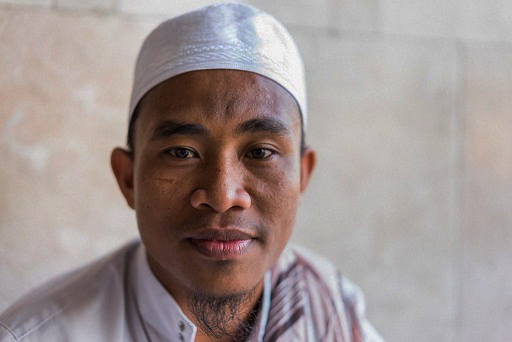
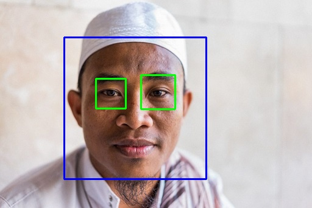
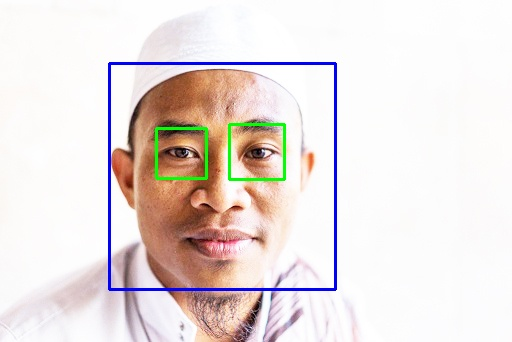
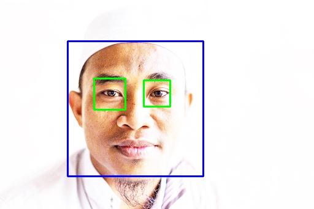
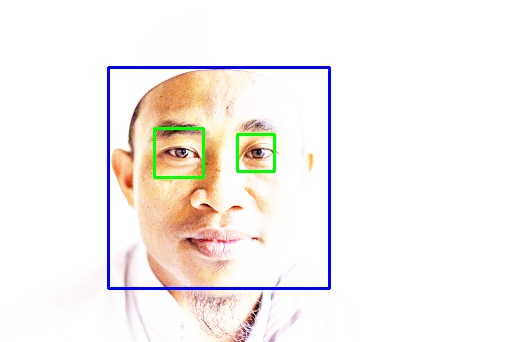

Wajah dengan Brightness -50%
Wajah dengan Brightness bawaan

Wajah dengan Brightness +50%
Wajah dengan Brightness +100%
Wajah dengan Brightness +150%
Wajah dengan Brightness +200%

Nama : Dimas Fajar Saputro
NIM : L200160090
|  | Wajah dengan Brightness -50% |
|  | Wajah dengan Brightness bawaan |
|
| Wajah dengan Brightness +50% |
|  | Wajah dengan Brightness +100% |
|  | Wajah dengan Brightness +150% |
|  | Wajah dengan Brightness +200% |
|
| Wajah dengan Brightness +250% |
import numpy as np
import cv2
face_cascade = cv2.CascadeClassifier('F:/opencv/venv/Lib/site-packages/cv2/data/haarcascade_frontalface_default.xml')
eye_cascade = cv2.CascadeClassifier('F:/opencv/venv/Lib/site-packages/cv2/data/haarcascade_eye.xml')
img = cv2.imread('face.jpg')
gray = cv2.cvtColor(img, cv2.COLOR_BGR2GRAY)
faces = face_cascade.detectMultiScale(gray, 1.3, 5)
for (x,y,w,h) in faces:
img = cv2.rectangle(img,(x,y),(x+w,y+h),(255,0,0),2)
roi_gray = gray[y:y+h, x:x+w]
roi_color = img[y:y+h, x:x+w]
eyes = eye_cascade.detectMultiScale(roi_gray)
for (ex,ey,ew,eh) in eyes:
cv2.rectangle(roi_color,(ex,ey),(ex+ew,ey+eh),(0,255,0),2)
cv2.imwrite('face1.jpg', img)
cv2.imshow('img',img)
cv2.waitKey(0)
cv2.destroyAllWindows()